이달의 대표 도서 · 막스 피카르트
말이 잠시 멈춘 자리,
무엇이 남아 있을까요.
10월 29일 오후 7시, 『침묵의 세계』를 함께 읽어요.
책의 흐름과 핵심 질문, 우리만의 독서 노트를 펼쳐요.
취향은 달라도, 이야기는 이어지니까
10월 29일 오후 7시, 『침묵의 세계』를 함께 읽어요.
책의 흐름과 핵심 질문, 우리만의 독서 노트를 펼쳐요.
소설 속 인물의 선택부터 밑줄 친 한 문장까지.
정답을 찾기보다, 서로의 시선을 빌려 읽어요.
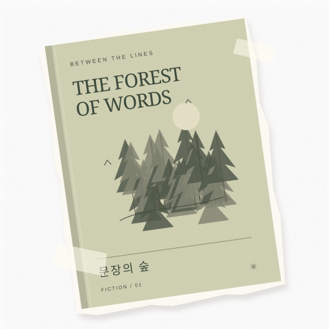
어떤 문장은 오늘의 나를 조금 더 알게 해줘요.
에세이를 읽고 일상의 작은 장면을 나눠요.
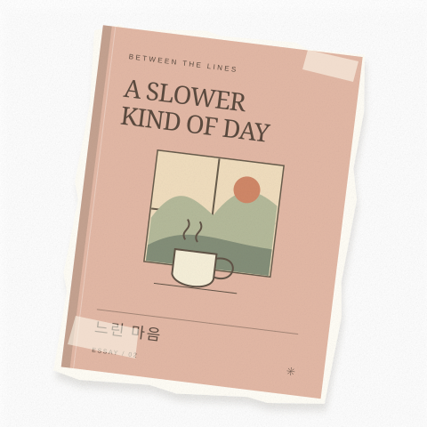
도시와 일, 관계와 사회를 새로운 눈으로.
인문서 한 권에서 시작해 우리 삶으로 이어가요.
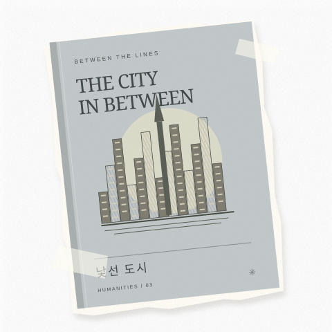
어떤 책이든 괜찮아요. 요즘 읽는 책을 가져와
마음에 남은 이야기 하나를 들려주세요.
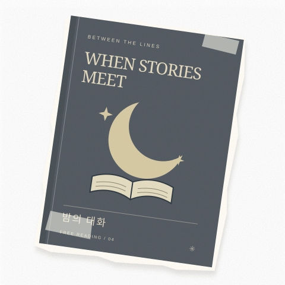
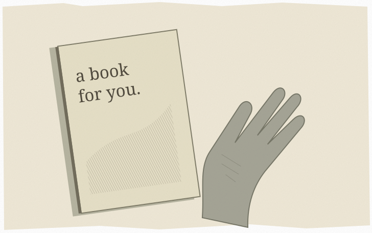
읽고 싶은 주제, 편안한 시간.
지금의 나에게 맞는 모임을 찾아보세요.
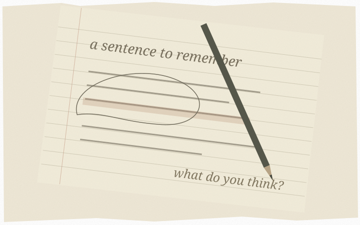
완벽한 감상문은 필요 없어요.
좋았던 문장이나 떠오른 질문이면 충분해요.
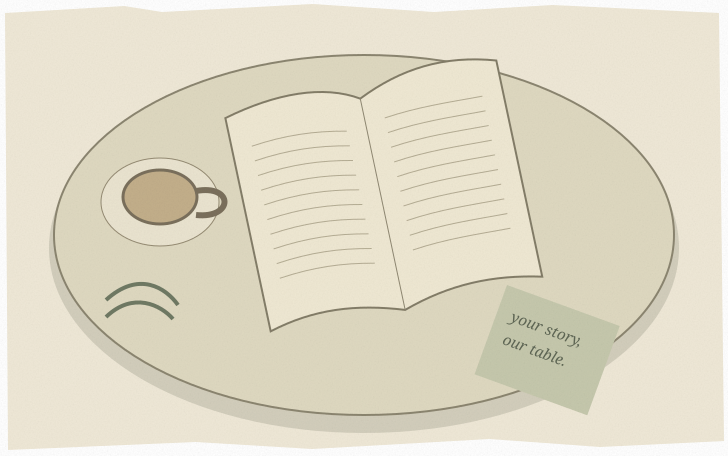
말하는 만큼 듣는 시간도 소중하게.
다른 생각을 환영하는 자리를 함께 만들어요.
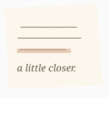
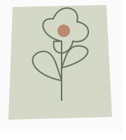
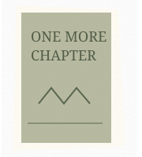
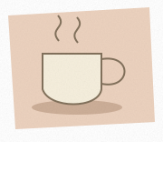
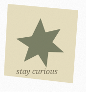